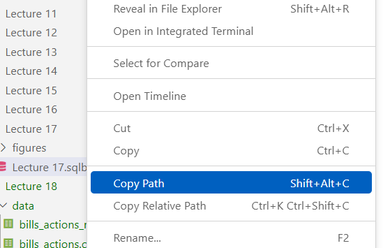
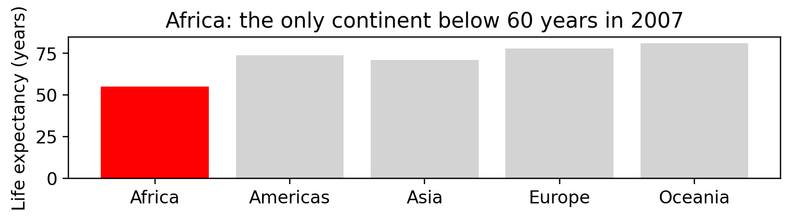
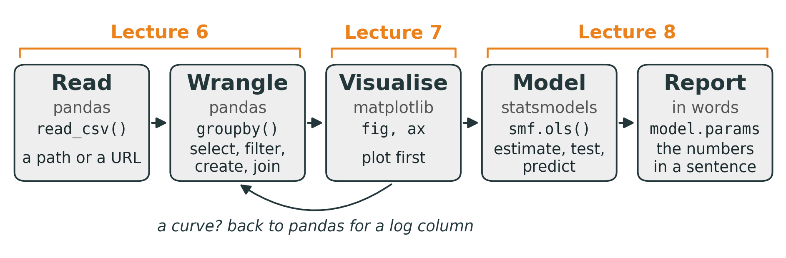
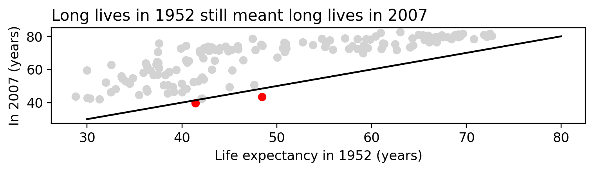
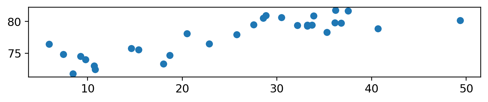
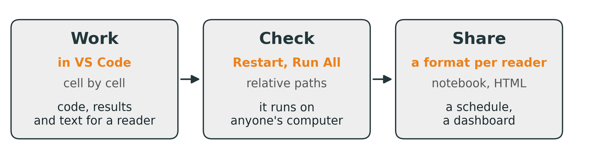

| countries | pop_m | |
|---|---|---|
| continent | ||
| Asia | 33 | 1395.0 |
| Europe | 30 | 418.0 |
| Americas | 25 | 345.0 |
| Africa | 52 | 238.0 |
| Oceania | 2 | 11.0 |
Lecture 9: From a File to a Finding
BAA1118 - Foundations of Programming for Analytics & AI
Damien Dupré
1. Reading Paths
Where Is the File?
A path is a file’s address: the folders to open, from the top of the disk down to the file.
Read it from left to right:
/, orC:\on Windows: the root, the top of the diskUsers/aoife: your home folder, named after youBAA1118, thendata: two folders, each inside the one before.BAA1118is the course folder you made in tutorial 5roasted_daily.csv: the file, its name then its extension
Absolute and Relative Paths
# absolute: starts at the root, so it works on Aoife's laptop only
sales = pd.read_csv("/Users/aoife/BAA1118/data/roasted_daily.csv")
# on Windows: "C:/Users/aoife/BAA1118/data/roasted_daily.csv"
# relative: starts from the notebook's folder, so it works on any computer
sales = pd.read_csv("data/roasted_daily.csv")- Absolute: from the root. Anyone else’s computer has no
aoifefolder, so the same line fails there - Relative: from the folder the notebook is in. It works wherever the notebook sits beside its
datafolder: use relative paths in your notebooks - Write
/on both systems: Python on Windows accepts it, and\causes trouble
Where Is the Notebook Running?
os, a module that comes with Python, answers from inside the notebook:
/Users/aoife/BAA1118
['data', 'lecture_9.ipynb', 'tutorial_08.ipynb']
['roasted_daily.csv']
Truegetcwd(): get the current working directory. On Windows:C:\Users\aoife\BAA1118- The first cell of the mock test, and of Test 2, uses
os.path.exists()on its data
A Notebook in a Subfolder
In VS Code, a notebook’s relative paths start from its own folder, not from the folder you opened:
In test2_mock.ipynb:
Copy the Path, Never Type It

Source: Danilo Freire, DATASCI 151 lectures
In VS Code’s Explorer, right-click the file:
- Copy Path: the absolute path
- Copy Relative Path: from the folder open in VS Code, not from the notebook. Right only if the notebook sits in that folder
On Windows, both use \: change each one to /. In "data\roasted_daily.csv", Python reads \r as one character, a carriage return, and never finds the file.
Your Turn: Get Set Up
In VS Code, open your BAA1118 folder, then File -> New File... -> Jupyter Notebook. Save it in BAA1118 as lecture_9.ipynb, select your kernel as in the tutorials, and run this cell first:
You should see (1704, 6). Keep the notebook open: today’s exercises reuse these libraries and gapminder.
Your Turn: Read a Path
Replace each ____, using the comments, then run the cell:
You should see the path of your BAA1118 folder, a list with 'roasted_daily.csv' in it, True, then (1086, 10).
Solution
/Users/aoife/BAA1118
['roasted_daily.csv']
True
(1086, 10)On Windows, the first line is C:\Users\aoife\BAA1118. False, or a FileNotFoundError? Compare the first two lines with the Explorer: is the notebook in BAA1118, and the file in data?
2. Lectures 6 to 8 in Review
Lecture 6: Wrangling with pandas
df = pd.read_csv("data/file.csv") # read: a DataFrame
df.shape, df.head(3), df["a"].value_counts() # look
df = df.rename(columns={"old": "new"}) # rename: store the new table
df[["a", "b"]] # select: df["a"] alone is a Series
df[(df["a"] == "x") & (df["b"] > 0)] # filter: & for and, | for or
df.sort_values("a", ascending=False) # sort: the largest first
df["c"] = df["a"] * 2 # create: every row at once
df.groupby("g")["a"].mean() # summarise: one number per group
df.groupby("g").agg(avg=("a", "mean")) # several statistics, each named
df.merge(other, on="key", how="left") # join: then check len()- Five operations: selection, reduction (filter), extension (create), aggregation (summarise) and combination (join)
- Text in quotes, numbers without;
==compares,=stores
Your Turn: Wrangle
The 1952 countries. Replace each ____, using the comments:
g1952 = gapminder[gapminder[____] == ____] # the column "year", then 1952
g1952["pop_m"] = g1952[____] / 1_000_000 # "pop", in millions
(g1952
.groupby(____) # by "continent"
.agg(countries=("country", ____), pop_m=("pop_m", ____)) # "nunique", then "sum"
.sort_values("pop_m", ascending=____) # largest first: False
.round()
)You should see Asia first, with 33 countries and 1395 million people.
Solution
In 1952, Asia already held more people than the four other continents together, and Africa had the most countries, 52.
Lecture 7: Visualisation with matplotlib
fig, ax = plt.subplots() # the canvas
ax.scatter(df["x"], df["y"], color="lightgrey") # a geometry: x first, then y
ax.scatter(one["x"], one["y"], color="red") # grey everything, colour one thing
ax.set_xscale("log") # a scale
ax.set(xlabel="Income (US$)", ylabel="Life expectancy (years)") # labels, with units
ax.set_title("A title that states the finding") # the finding
plt.show()
fig.savefig("chart.png", dpi=300, bbox_inches="tight")- The question picks the geometry: how two columns relate,
ax.scatter(); a change over time,ax.plot(); one number per category,ax.bar()orax.barh(); a spread,ax.hist()orax.boxplot() - After a
groupby(), the groups are the index:ax.bar(s.index, s.values) - Colour by group: a loop, one layer per group with
label=, thenax.legend()
Your Turn: Grey Bars, One Colour
The 2007 countries. Replace each ____, using the comments:
g2007 = gapminder[gapminder["year"] == 2007]
means = g2007.groupby("continent")[____].mean() # the mean of "lifeExp"
low = means[means < ____] # the continents below 60 years
fig, ax = plt.____() # the canvas, with subplots
ax.____(means.index, means.values, color=____) # bars, with .bar(); "lightgrey"
ax.bar(low.____, low.____, color=____) # .index, .values; then "red"
ax.set(ylabel=____, title=____) # "... (years)", then the finding
plt.show()You should see five grey bars, and Africa’s in red, at about 55 years.
Solution
g2007 = gapminder[gapminder["year"] == 2007]
means = g2007.groupby("continent")["lifeExp"].mean()
low = means[means < 60] # a Series filters like a table
fig, ax = plt.subplots()
ax.bar(means.index, means.values, color="lightgrey")
ax.bar(low.index, low.values, color="red")
ax.set(ylabel="Life expectancy (years)",
title="Africa: the only continent below 60 years in 2007")
plt.show()
Lecture 8: Statistics with statsmodels
df["x"].corr(df["y"]) # r, from -1 to +1: straight lines
df[["x", "y", "z"]].corr() # every pair of columns at once
df["log_x"] = np.log(df["x"]) # a curve? straighten it first
model = smf.ols("y ~ x + C(group)", data=df).fit() # = becomes ~, + adds a predictor
model.params # the estimates: Intercept, slopes
model.summary().tables[1] # std err, p-value, 95% CI
model.rsquared # the share of the variation
model.predict(new) # new: a DataFrame with x in it
train = df.sample(frac=0.75, random_state=1) # fit on train, then measure
test = df.drop(train.index) # the misses on test: RMSE, MAE- Explanation: the estimates and how sure we are, fitted on all the data
- Prediction: how far the guesses miss, on rows the model has never seen
Lecture 8: Results in Words
Lecture 8’s model of the 2007 countries, lifeExp ~ log_gdp:
- b = 7.20: one more unit of
log_gdpis associated with 7.2 more years of life expectancy, never “causes” - 95% CI 6.3 to 8.1: slopes compatible with the data; 0 is not among them
- p < 0.001 (
0.000in the table): below 0.05, the slope is significantly different from 0. Not the probability that the result is true - R² = 0.65: the model accounts for 65% of the variation between countries. The other 35% is how far countries sit above or below what their income predicts
- No prediction outside the data: incomes from $278 to $49,357
Your Turn: Fit, Read, Predict
The 1977 countries. Replace each ____, using the comments:
g1977 = gapminder[gapminder["year"] == 1977]
g1977["log_gdp"] = np.log(g1977["gdpPercap"])
model = smf.ols(____, data=g1977).fit() # lifeExp explained by log_gdp
print(model.____.round(2)) # the estimates, with .params
print(round(model.____, 2)) # R², with .rsquared
new = pd.DataFrame({"log_gdp": np.log([1000, 10000])}) # 1,000 and 10,000 US$
print(model.____(new).round(1)) # with .predict()You should see -2.74 and 7.55, then 0.66, then 49.4 and 66.8 years.
Solution
Intercept -2.74
log_gdp 7.55
dtype: float64
0.66
0 49.4
1 66.8
dtype: float64In 1977, income accounted for 66% of the variation. Both incomes lie inside the data, from $371 to $59,265.
3. How They Fit Together
One Analysis, Three Lectures

- One road, three stretches: a question goes in, a sentence with numbers comes out
- It loops back to pandas: a curve needs a log column, as in lecture 8, and a test set needs
sample()anddrop()
What Each Step Hands to the Next
| Step | Code | Hands on |
|---|---|---|
| read | df = pd.read_csv("data/file.csv") |
a DataFrame |
| wrangle | df[df["year"] == 2007], .merge(), df["log_x"] = ... |
a DataFrame: one row per case, a column for each variable the question needs |
| summarise | s = df.groupby("g")["y"].mean() |
a Series: its index holds the groups, for ax.bar(s.index, s.values) |
| visualise | ax.scatter(df["x"], df["y"]) |
a chart: a straight line, or a curve to straighten first? |
| model | model = smf.ols("y ~ x", data=df).fit() |
a model: its formula names the columns |
| report | model.params["x"], model.rsquared |
numbers, to put in words |
The column names tie the three lectures together: created in pandas, plotted with matplotlib, named in the formula. A typo anywhere along the road stops it.
One Question, Three Lectures: pandas
Did the countries that lived longest in 1952 still live longest in 2007?
url = "https://raw.githubusercontent.com/damien-dupre/data/refs/heads/master/gapminder.csv"
gapminder = pd.read_csv(url) # read
y1952 = gapminder[gapminder["year"] == 1952] # filter
y1952 = y1952[["country", "continent", "lifeExp"]] # select
y1952 = y1952.rename(columns={"lifeExp": "life_1952"}) # rename
y2007 = gapminder[gapminder["year"] == 2007]
y2007 = y2007[["country", "lifeExp"]]
y2007 = y2007.rename(columns={"lifeExp": "life_2007"})
both = y1952.merge(y2007, on="country", how="left") # join
both["gain"] = both["life_2007"] - both["life_1952"] # create
print(len(y1952), len(both), round(both["gain"].mean(), 1))142 142 17.9One row per country, both years side by side: 142 rows before the join, 142 after. On average, people lived 17.9 years longer in 2007 than in 1952.
One Question, Three Lectures: matplotlib
fell = both[both["gain"] < 0]
fig, ax = plt.subplots(figsize=(8, 1.45))
ax.scatter(both["life_1952"], both["life_2007"], color="lightgrey")
ax.scatter(fell["life_1952"], fell["life_2007"], color="red")
ax.plot([30, 80], [30, 80], color="black") # where 2007 equals 1952
ax.set(xlabel="Life expectancy in 1952 (years)", ylabel="In 2007 (years)")
ax.set_title("Long lives in 1952 still meant long lives in 2007", loc="left")
plt.show()
Plot first: a straight line, so a straight-line model fits. Below the black line, in red, life expectancy fell: Swaziland and Zimbabwe.
One Question, Three Lectures: statsmodels
==============================================================================
coef std err t P>|t| [0.025 0.975]
------------------------------------------------------------------------------
Intercept 29.3916 2.658 11.056 0.000 24.136 34.647
life_1952 0.7668 0.053 14.580 0.000 0.663 0.871
==============================================================================
0.6Across 142 countries, each extra year of life expectancy in 1952 was associated with 0.77 more years in 2007 (95% CI 0.66 to 0.87, p < 0.001). Life expectancy in 1952 accounts for 60% of the variation between countries in 2007.
Your Turn: From Table to Finding
g2007 = gapminder[gapminder["year"] == 2007]
europe = g2007[g2007["continent"] == ____] # lecture 6: "Europe"
europe["gdp_k"] = europe["gdpPercap"] / 1000 # in thousands of US$
fig, ax = plt.subplots()
ax.____(europe["gdp_k"], europe["lifeExp"]) # lecture 7: points, .scatter()
plt.show()
model = smf.ols(____, data=europe).fit() # lecture 8: lifeExp by gdp_k
print(model.params.round(2))Europe in 2007, one blank per lecture. You should see 30 points rising along a line, then 72.27 and 0.21.
Solution
g2007 = gapminder[gapminder["year"] == 2007]
europe = g2007[g2007["continent"] == "Europe"]
europe["gdp_k"] = europe["gdpPercap"] / 1000
fig, ax = plt.subplots()
ax.scatter(europe["gdp_k"], europe["lifeExp"])
plt.show()
model = smf.ols("lifeExp ~ gdp_k", data=europe).fit()
print(model.params.round(2))
Intercept 72.27
gdp_k 0.21
dtype: float64In Europe in 2007, 1,000 US$ more GDP per capita was associated with 0.21 more years.
When the Code Stops
| You see | Why | Fix |
|---|---|---|
FileNotFoundError |
the path does not start from the notebook’s folder | os.getcwd(), then os.listdir() |
KeyError: 'lifeExp' |
no column has that name: a typo, or it was renamed | check df.columns |
NameError: name 'both' is not defined |
the cell that creates both has not run |
run the cells above, in order |
ValueError: The truth value of a Series is ambiguous |
and or or between two conditions |
& or |, each condition in brackets |
| fewer rows after a join | how="inner" drops the rows with no match |
how="left", then len() |
PatsyError: ... name 'gdp' is not defined |
the formula names a column the table does not have | check df.columns |
Read an error from its last line: it names the problem, and often the fix.
4. What to Do With a Notebook
A Notebook’s Life at Work

- At work, others read your notebook: a colleague, a manager, an auditor, or you in six months
- So analysts take the same three steps every time, before anyone else sees their work
Work: Cells and the Kernel
+ Code+ Markdown
▷ Run All↻ RestartClear All Outputs
Python 3.14.10
- Code cells and Markdown cells: each code cell’s output is saved in the
.ipynb - The kernel, at the top right, runs the cells: Python 3.14, as in the tutorials
- It remembers every name a cell creates, until it restarts.
[1],[2]: the order in which the cells ran
| Action | Keys |
|---|---|
| run, then move on | Shift+Enter |
| leave the cell | Esc |
| add a cell above, below | Esc, A or B |
| make it text, code | Esc, M or Y |
| delete it | Esc, D D |
| undo a deletion | Esc, Z |
The same keys on Windows and on a Mac.
Work: Write for a Reader
At work, the first cell answers the question, for a reader who reads nothing else:
- Then a Markdown cell before each step: what it does, and why, in one sentence
- Charts with a title that states the finding, and numbers with their units
+ Markdown, or Esc then M; double-click to edit, Shift+Enter to show. In the tests, written answers go in the cells marked Your answer
Check: Restart, Then Run All
- The kernel remembers names from cells you have since changed, deleted or run out of order: a notebook can work for you, and fail for everyone else
- Restart, which empties the kernel’s memory, then Run All: every result now comes from the code above it. A cell stops? Fix it, then check again
- Relative paths only:
data/..., never/Users/aoife/... - Nothing private: outputs are saved in the file, so the
.head()of a customer table travels with it. No passwords, and no personal data you may not share - Then save: Ctrl+S, or Cmd+S on a Mac
Share: One Notebook, Several Readers
| Reader | Send them | How |
|---|---|---|
| a colleague who codes | the notebook and its data folder |
a zip, or the team’s Git repository |
| a manager or a client | the results, not the code | an HTML report, or a PDF printed from it |
| the same report every week | a scheduled notebook | re-run on new data, as Netflix and Meta do |
| numbers to watch every day | a dashboard | Power BI or Tableau, on the same data |
Ask who will read it before you choose: the format follows the reader.
Share: Export to HTML
- Once only: run
%pip install nbconvertin a cell, then delete the cell - Restart, then Run All, then save
- In the toolbar:
..., then Export, then HTML. Save it beside the notebook - Open the
.htmlin any browser: text, code, tables and charts in one file, no Python needed
- A PDF? Print the HTML from your browser
- Without the code, as reports for managers often are, in a terminal:
Your Turn: From Notebook to Report
- In
lecture_9.ipynb, add a Markdown cell at the very top (Esc, A, then M): a title, then the question, data and finding of one exercise - Click Restart, then Run All. A cell stops? Fix it, perhaps a
____left blank - Once only: run
%pip install nbconvertin a new cell, then delete that cell and save ..., then Export, then HTML, and openlecture_9.htmlin your browser
You should see your summary first, then the code, tables and charts: a report anyone can open, without Python.
Hand In: From Loop to VS Code, and Back
The mock test and Test 2 each come as a zip: a notebook and its data folder.
- Unzip it: on Windows, right-click, then Extract All; on a Mac, double-click it. A notebook opened from inside the zip has no
datafolder beside it - Move the unzipped folder into
BAA1118, notebook anddatatogether. On a DCU computer, leave it where it is - In VS Code, open
BAA1118(on a DCU computer, the unzipped folder), then the notebook. Select the kernel that shows Python 3.14, or on a DCU computer the Python that VS Code offers - Run the first cell:
Ready. Data found: True.False? See section 1, on paths - Work in order: code in the empty cells, sentences in the Your answer cells
- Save, then upload the
.ipynbfile to Loop: the notebook only, not the data
Here the reader is the marker, who reads your code: so you hand in the notebook itself.
Your Turn: The Mock Test Drill
With the mock test from Loop, so that everything works first time on 26 November:
- Download
BAA1118_test2_mock.zip, unzip it, and moveBAA1118_test2_mockintoBAA1118 - In VS Code, open
test2_mock.ipynb, select your kernel, and run the first cell - Add a cell under it (Esc, B), run
print(os.getcwd()), and save
You should see Ready. Data found: True, then a path that ends with BAA1118_test2_mock.
Test 2: Thursday 26 November
- In class, one hour, in a notebook in VS Code: you write and run the code, as in the tutorials and the mock test
- It covers the pandas, matplotlib, statistics and regression of lectures 6, 7 and 8: today’s review
- The best revision: the mock test in one hour, then every Your Turn of lectures 6 to 9 without the solution, then check
References
- Jupyter Notebooks in VS Code: VS Code’s own guide to cells, kernels, Run All and Export
- nbconvert: turns a notebook into HTML, PDF or a script, with or without the code
- Notebooks run on a schedule, as reports: at Netflix and at Meta
- os.path: Python’s functions for paths,
exists()among them - Navigating Files and Directories: absolute and relative paths, and
.., by Software Carpentry - R for Data Science, Whole game: the same road, from import to communication, in R

Thanks for your attention and don’t hesitate to ask if you have any questions!